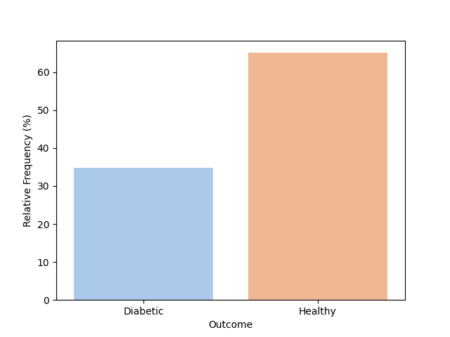
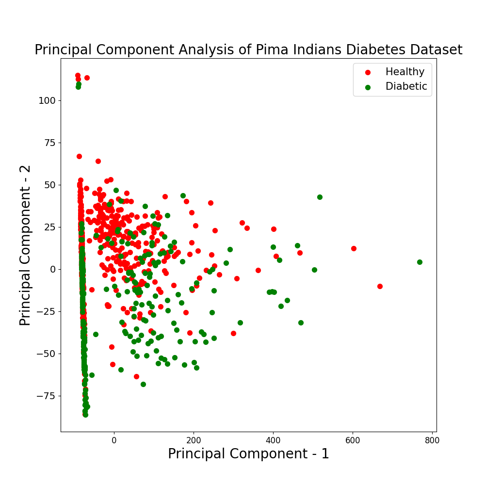
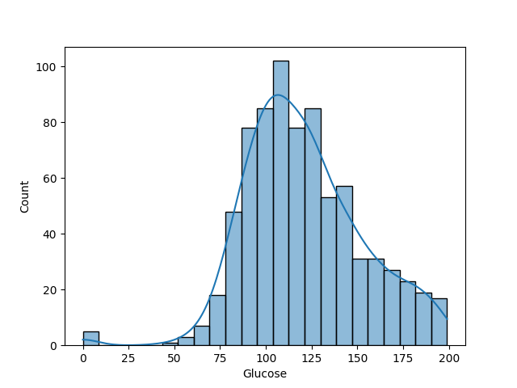
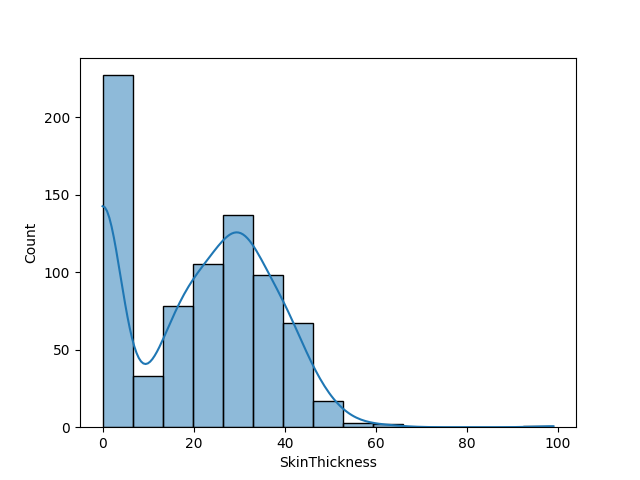
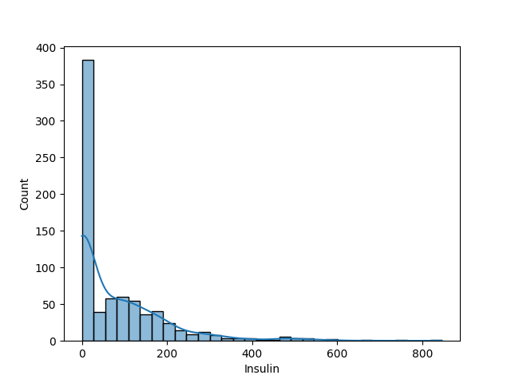
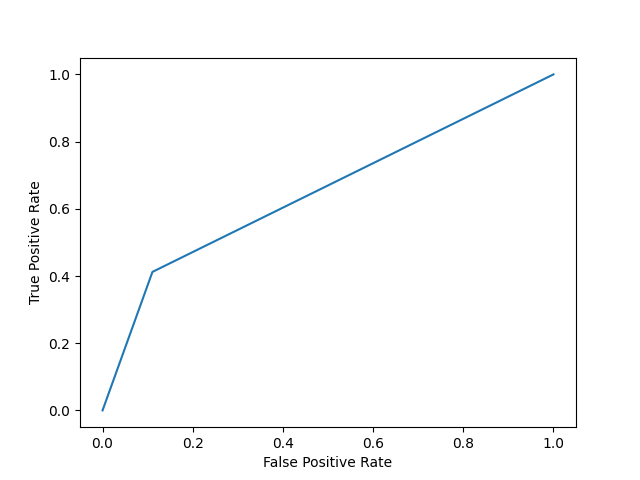
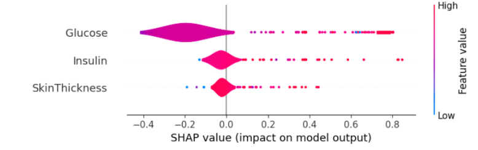

Healthy or Diabetic using a Naive Bayes Classifier
0
In the United States, Diabetes is the seventh leading cause of death with 11% of the population
suffering from the ailment. It costs the country $327 billion to treat and insulin is the
most common treatment of those with Type 2 Diabetes. Type 2 Diabetes occurs when the body
efficiently produces insulin.
The dataset is composed of females 21 years and older and was collected
by the National Institute of Diabetes and Digestive and Kidney Diseases. The Pima Indians refer to
North American Native Americans who live in Arizona. They are sedentary farmers who primarily
lived off of jackrabbits and beans.
The following dataset is classified using a Principle Component Analysis (PCA) to select the top 3
features and classified as healthy or diabetic using a Naive Bayes Classifier.The results of the
analysis can be found in the following workbook:
Analysis Workbook
Dataset Overview
It is a small dataset with 768 records and 9 columns. One of the columns delineated whether
a patient is diabetic or healthy. It is unclear whether each record is a unique patient or if the same
patient appears multiple times in the dataset.
There are eight features in the sample.
Number of Pregnancies
Gestational Diabetes may develop during a pregnancy and is more
likely in women with 3 or more pregnancies. Additionally, women who are 30 or older when they
become pregnant are at higher risk of developing Gestational Diabetes.
Glucose
There are various types of Glucose tests for Diabetes. It is unclear the
type of Glucose test used in this data collection method. Each record may be the same patient or
a different patient. In this analysis each record is considered a unique patient, but it is
possible that the same patient is repeated in different medical tests.
Blood Pressure
This measures the pressure the heart uses to pump blood through
the body. There are usually two numbers to describe the pressure.
The Systolic Pressure measures the pressure used to move the blood around the body when the
heart beats. The Diastolic Pressure is the pressure used to move the blood around the body
between heart beats.This dataset only denotes one number and it is uncertain if this is the
Systolic or Diastolic pressure.
Skin Thickness
The level of collagen tends to increase in Diabetic patients.
Insulin Level
The amount of insulin in the blood. This test is used to determine if
someone is Insulin resistant.
Body Mass Index (BMI)
A value based on the height and weight of the person.
A person may be classified as underweight, healthy, overweight and obese. A person who is overweight or
obese may be more likely to develop diabetes.
Diabetes Pedigree Function
The likelihood of diabetes based on a person’s family history.
Age
The age of the patients, which may be relevant to determine if the person is
developing gestational or geriatric diabetes.
There is a class imbalance with more than the majority (~65%) of the data being healthy.

Imbalance Diabetic/Healthy Patients
PCA to determine the Top 3 Significant Continuous Features
From the projection of the instances on the first two principal components, it is clear that
the Healthy and Diabetic patients are not linearly separable, so classifiers like SVM or
Logistic Regression may not be beneficial. Based on the loadings the top three important
features are Insulin, Glucose, and SkinThickness to predict the likelihood of Diabetes.
The first component explains 94% of the variance in the data.

PCA of Pima Indians
Data Analysis
Conditional probability is used to determine the risk scores of two characteristics.
The probability a person is Diabetic given that she is Obese is 40% and the Probability a person is Diabetic
given she had at least 3 pregnancies is 43%. Both have a risk of less than 50%, which is less severe a concern
to a health care professional.
The distribution of the top 3 features is used to uderstand the dispersion of the values in these three
categories.
Glucose
Majority of the patients are between 99 and 140 units.
It is unclear the type of Glucose test used for data collection.

Skin Thickness
Healthy skin thickness is between 1.5mm and 3.0 mm,
but 50% of the data have skin thickness above 23mm.

Insulin Level
Most of the patients have an Insulin value under 200
microunits per milliliter (mcU/mL). A healthy Insulin level is 17mcU/mL. 50% of the data is
under 30 mCU/mL. It is unclear if the values greater than 200 mCU/mL are outliers or sick patients.

A t-test shows that the average ages of healthy and Diabetic women are significantly different (p < 0.001).
The average age of a person who is Diabetic is 37 years, while the age of a healthy person is 31 years.
Naive Bayes Classification of Patients
The dataset is small, so a simple model - the Naive Bayes Classifier - is used to classify the patients
as healthy or Diabetic. The model is trained on the top three features from the Principle Component
Analysis (PCA) - Insulin, Glucose, and Skin Thickness - preventing noise from entering the model.
The results are evaluated in three methods to determine the goodness of fit: F1-Score, ROC Curve,
and Confusion Matrix.
There is a class imbalance, so the F1-score is used to evaluate the results of the model.
A high accuracy curve can result from the majority class being predicted. The model results
in an F1-score of 0.51. This is a mediocre score since the best score the model could produce is 1.
A feature analysis is used to better understand the significance of each feature in the model.
A plot illustrating the true positive and false positive rate at various the discrimination thresholds.
The true positive rate or sensitivity tells us the proportion of the positive class that was correctly
labeled by the model. In this case, that is the number of people who were
correctly identified as Diabetic by the model. The False Positive rate is the rate
of incorrect positives attributed by the model. In this situation it is the rate of
people labeled Diabetic who are actually healthy. Neither is ideal as both
incur a cost on the health system. The Area under the Curve (AUC) measures
how good the classifier is at distinguishing true and false positives. This model scores 0.65,
so it is able to distinguish between classes slightly better than random chance.

The Confusion Matrix is a method to better understand the number of False Positives and False Negatives.
False predictions could be harmful to the health of the patient. The recall refers to
the number of correctly predicted positively Diabetic people out of actual Diabetic people
and scores 0.41. The model misses a substantial number of Diabetic people and mislabels them
as healthy.
The precision refers to the number of Diabetic people correctly predicted out of all the
Diabetic classifications predicted by the model and the model scores 0.66, which is slightly
better than random chance.
225
28
77
54
The most important features to least important features are Glucose, Insulin and SkinThickness.
The higher these values, then the more likely a sample is classified as Diabetic.

SHAP Feature Analysis
There may be two additional future steps for this analysis. The first is to try
a non-linear classification model (KNN, Decision Tree or Random Forest) and the third is to handle the class imbalance using over or under sampling.
These three steps may result in improved evaluation metrics.